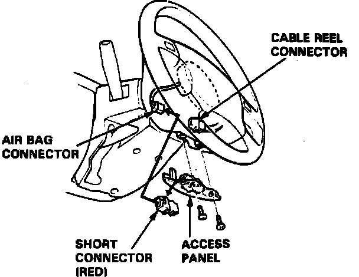

Air Bag(s) Arming and Disarming: Service and Repair
Fig. 1 SRS Red Connector:

1. Disconnect negative and positive battery cables.
2. All supplemental restraint system (SRS) electrical wiring and connectors are colored yellow.
3. Do not use electrical test equipment on these circuits.
4. Tampering or disconnecting SRS wiring may render the system inoperative or cause accidental deployment.
5. Prior to disconnecting any part of the SRS wire harness, install short connectors (RED) on the airbag(s), Fig. 1, and both seat belt pretensioners.
6. After installing short connector(s) on airbag(s), immediately install one short connector ``A'' No. 07MAZ-SP00200 on the cable reel connector for driver's airbag, and another on the SRS main harness connector for passenger's airbag, if equipped. This will prevent any static electricity from triggering seat belt pretensioners before you disconnect them.